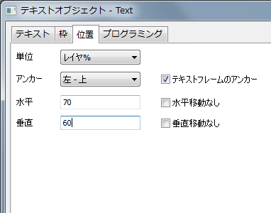
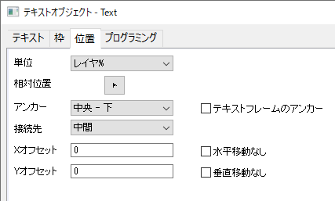
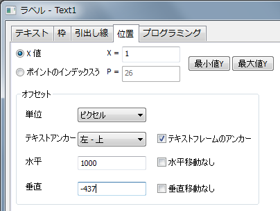

ミニチュートリアル：レイヤーの右上隅の凡例を編集
- 凡例を右クリックし、コンテキストメニューからプロパティ...を選択します。
- テキストオブジェクトダイアログで、位置タブを開きます。
- アンカーを右 - 上、水平を100、垂直を0と設定します。
- テキストフレームのアンカーにチェックが入っていることを確認します。
Note: テキストフレームの アンカーがにチェックが入っていない場合、上記の設定では凡例とレイヤーフレームの位置合わせを行うことができません。
| テキストオブジェクト | 距離計測ツール アスタリスクブラケット |
|---|---|
|  |  |
| データラベル | |
|  |
単位のドロップダウンリストは絶対単位も相対単位も表示します。
| インチ, cm, mm, ピクセル, ポイント | 水平 と 垂直 の絶対単位 |
|---|---|
| スケール | この単位を選択すると、ラベルの位置は軸スケールに対応します。軸スケールが変更されると変更されます。 |
| ページ% | この単位が選択されると、水平 と 垂直のテキストボックスの値は、グラフページの高さと幅のパーセンテージで表示されます。 |
| レイヤの% | この単位が選択されると、水平 と 垂直のテキストボックスの値は、レイヤの高さと幅のパーセンテージで表示されます。 |
距離計測ツールとアスタリスクブラケットで利用可能な設定です。これらのツールで作成されるオブジェクトは、「ターゲット」テキストオブジェクトが、描画された「ソース」オブジェクト（矢印または括弧）に「接続」されているハイブリッドオブジェクトです。したがって、相対位置はソースオブジェクトに対するターゲットオブジェクトの位置のことです。
これらのオブジェクトを作成する場合、システム変数@URPCを1（デフォルト）にする必要があります。 そうでない場合、位置タブに相対位置の設定は表示されません。
次を参照ください。
このドロップダウンリストからオブジェクトのアンカーポイントを指定出来ます。
例えば、左上 を アンカーに選んだ場合、オブジェクトの左上のポイントが水平 と 垂直 の値となります。
Note:
|
枠上のアンカーポイントを指定(テキストオブジェクトの枠は 枠 タブで設定が出来ます。)
オブジェクトに枠が無い場合でも、このチェックボックスにチェックを入れると、テキストの端がアンカーになります。
オブジェクトに枠がある場合は、このチェックボックスにチェックを入れると、枠の端がアンカーになります。
ミニチュートリアル：レイヤーの右上隅の凡例を編集
Note: テキストフレームの アンカーがにチェックが入っていない場合、上記の設定では凡例とレイヤーフレームの位置合わせを行うことができません。 |
距離計測ツールとアスタリスクブラケットで利用可能な設定です。システム変数@URPCが1である必要があります（デフォルト）。
水平または垂直のオフセット値の設定
水平移動なし/ 垂直移動なし にチェックを入れると、水平方向/垂直方向の移動を制限することが出来ます。
距離測定ツールとアスタリスクブラケットの場合、このコントロールはXオフセットとYオフセットになり、描画ソースオブジェクトからのテキストオブジェクトの位置のオフセットに使用されます。
アノテーションオブジェクトの位置タブでは、次のオプションでデータポイントに連結されたオブジェクトを変更出来ます。
| X値 | X 値 オプションを選択し、テキストボックスにX 値を入力します。アノテーションオブジェクトは、このX値によるデータポイントに連結されているので、このデータポイントによってテキストは更新されます。 |
|---|---|
| ポイントのインデックス | ポイントのインデックス オプションを選択して、テキストボックスに、データのインデックス番号を入力します。アノテーションオブジェクトは、このX値によるデータポイントに連結されているので、このデータポイントによってテキストは更新されます。 |
| 最小値Y | このボタンをクリックして、最小のY値データにアノテーションアブジェクトを連結します。テキストはこのデータポイントに更新されます。 |
| 最大値Y | このボタンをクリックして、最大のY値データにアノテーションアブジェクトを連結します。テキストはこのデータポイントに更新されます。 |
Origin 2017移行では、見出しラベルをドラッグして移動できるようになりました。ポインタボタン |
| 単位 | 単位のドロップダウンリストは絶対単位も相対単位も表示します。 | ||
|---|---|---|---|
| テキストアンカー | このドロップダウンリストからオブジェクトのアンカーポイントを指定出来ます。
テキスト枠のアンカー のチェックボックスにチェックを入れると、枠上にアンカーポイントは設定されます。(テキストオブジェクトの枠は 枠 タブで設定が出来ます。) |
||
| 水平/垂直 | 水平または垂直のオフセット値の設定
水平移動なし/ 垂直移動なし にチェックを入れると、水平方向/垂直方向の移動を制限することが出来ます。
|